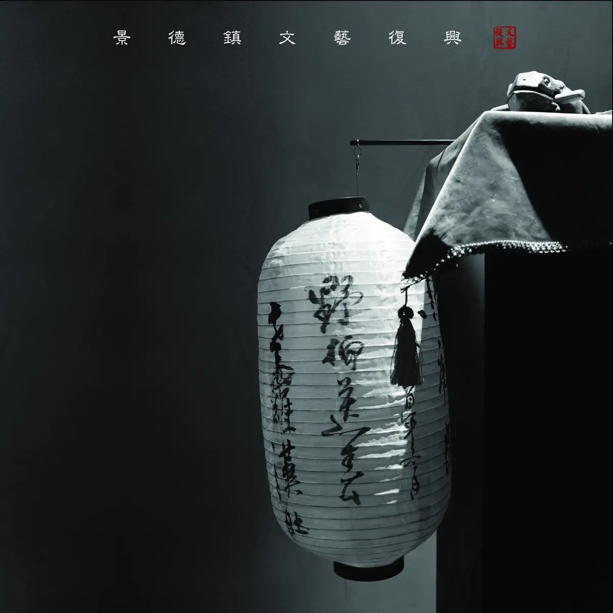

Album#26
水码头（小歌行）
{kind=link}

专辑信息
- 专辑名称：水码头（小歌行）
- 歌手：景德镇文艺复兴（赣东北乡土文化艺术团）
- 年份：2020-07-10
- 风格：独立、实验、摇滚、国风、民谣、神话
- 时长：约 50 分钟
有一次去听 Live，结束后场地里播放着一些音乐，其中有一首很有特色，我也很喜欢，就用听歌识曲识别了一下，是景德镇文艺复兴的「回衫」，于是知道了景德镇文艺复兴这支乐队，后面也去听了几场他们 Live。
景德镇文艺复兴的 Live 很有特色，他们的音乐往往融合了一些自创的神话，在 Live 里他们会演绎这些故事， Live 看起来像是一个舞台剧一样，蛮让人沉浸的，如果喜欢他们音乐的话，非常推荐去看一看现场。
景德镇位于江西（赣）的东北，于是景德镇文艺复兴也称自己为「赣东北乡土文化艺术团」， Live 结束合照往往都是大喊一个「赣」。
「水码头」这张专辑，歌词多数像是古诗词；编曲上，虽然用到了电吉他，但听起来又像是古筝，偶尔还能听到一些笛子、二胡、鸟鸣、孩子嬉戏等声音；主唱「九三」的声音也很好听。整体听起来，有一种在山间、古朴村镇、幽幽河道上自在吟唱的感觉。
景德镇文艺复兴目前已经出了好几张专辑了，除了「水码头」，还有「云难」、「小源春之」、「无穷岛」等，主题都是他们自创的一些神话，也推荐听听。
CD 里写的故事
景德鎮，古時名爲昌南鎮，穿過小鎮的母親河喚作昌南河。傅說，河中住着一位神靈，但是從未有人見過他的真面目，出于敬畏，鄉親們在渡河時，總會撤一把米在河中，以保佑平安。
昌南河兩岸的碼頭旁，各有一棵巨大的枯樹，説是千百年間，樹上從未有發過芽。這兩棵枯樹幹枯的枝就這磨伸向天空、伸向河面，看起來有點陰森詭异，于是附近的鄉親們經常會叮囑自己的孩童，不要到枯樹附近玩耍。
一日，住在河畔的一位老者，酒後夜半歸家，隱約聽聞美妙琴聲傳來，遂提着燈寵随聲前往，来到了碼頭旁。借着三分醉意，恍惚中，老人似乎進入了太虚的幻境，隱約看到碼頭旁枯樹之下，有一美貌女子在撫琴歌唱，她的身旁似乎還蹲着一只巨大的给蟆。隨着女子的歌聲老人手舞足蹈仿佛重獲青春。可當老人在枯樹下醒來，才發覺不過是大夢一場。
昌南鎮有一百零八條裏弄，而老羅漢肚，則是鎮上地勢最高的一條。這是一條沿山坡而上蜿蜒曲折的巷子，而山坡之下，有一池塘名爲「蓮花塘」。據説蓮花塘底與昌南河相通，有不少魚蝦蛇鼠借此道來往于河塘之間，也常有水中神靈游至蓮花塘，默默看着老羅漢肚中的人間烟火，可欲却不可求。
其實那日老者河畔所見事物，并非幻境。鎮民們将河中的神明稱為善神，以祈福尊良美好，但其實那是河中修煉的鱔魚，這一日得千年道行後終于可化作人形，怎奈法力還有欠缺，仍留有尾巴無法去除。恰好這河中還有個修煉五百年的蛤蟆對她言聽計從，于是鱔神向蛤蟆借了些法力助她成人。而蛤蟆，則躲在碼頭旁的枯樹之下，等鱔神體驗完人間事，約好三日即回。
從此之後，每年而季，昌南河總會發生洪澇灾害，每次洪水過復，總會有一件破爛的衣衫挂在河邊的枯樹上，説不準每次挂在河的哪一邊，也有的时候挂得高，有的時候挂得低。更巧的是，每次破衣衫所挂的高度，正是来年洪水最高峰的位置，而挂在哪棵樹上，來年水淹的定是哪邊。長此以往，鄉親們都會根據這個徵兆提前做好準備。至于這件破衣衫的來歷，則是衆説紛紜。其中一種說法，此衣衫是鎮上一位因洪水喪生的青年，在陰曹地府裏没有喝孟婆湯，也没有過奈何橋，衹選擇不再輪回為生命，而化作的一件襤褸衣衫。
其實，這洪水的緣由，是這枯樹下躲藏的蛤蟆。衹因鱔神流連人間，蛤蟆在枯樹下苦等了三日、三月、三年。鱔神未歸，更别說歸還法力。蛤蟆憤怒地每年借雨季施法發洪水作為信號，以作提醒，可鱔神始終無動于裏。于是，始謨衹得另覓它途。
這一年，皇帝突發怪病，久治不愈。一日夢中被水圍困，後又得一金色蛤蟆搭救。金蟾托夢說，自己正被壓在那昌南河岸的枯樹之下，如若脱身，願獻上一條腿作為藥引，定能藥到病除。
聖旨一下，官兵們立刻來到了碼頭，動手就要砍樹。河邊的老村長聞訊連忙趕來，說這雖是兩棵枯樹，但卻是昌南河的守護，若真的砍倒，來年勢必招來灾禍。可官兵們哪管這些，刀斧齊上，照砍不誤。老村長百般阻止不得，心急如焚，竟然一氣之下，撞死在了枯樹之上。
當北岸枯樹被野蠻地砍倒推入河中的瞬間，南岸的那棵竟然也應聲自己倒入河中，兩裸枯樹順着水流的方向在河中央相聚，他們緊緊地纏繞在一起，結束了千百年的隔河相望，共同地沉入了昌南河底。
砍倒的枯樹下果真有一金色蟾蜍，用它的腿做藥引，皇帝怪病果然就治癒了。官府奉旨要在老羅漢肚的山頂修建一座廟，而廟中供奉的正式一座巨大的三腳金蟾像。關於三腳金蟾的來歷，人們開始以 訛傳訛，不知何時竟然變成能够招財進寶的神靈，遠近聞名。于是昌南鎮開始變得人丁興旺，一片繁榮景象，老羅漢肚山上的金蟾寺更是香火不斷。
老羅漢肚的山頂修建一座廟，而廟中供奉的正是一座巨大的三脚金蟾像。關于三脚金蟾的來歷，人們開始以砍倒的枯樹下果真有一金色蟾蜍，用它的腿做藥引，皇帝怪病果真就治愈了。官府奉旨要在老羅漢
自打金蟾寺建成，昌南鎮周邊山中怪事頻出，鳥獸家富常離奇死亡，死狀奇慘，動物們祇剩下鮮活的血肉，而毛皮却不知所踪。鄉親們這時才想起老村長死前說的話，在砍倒的枯樹之下竟然發現一巨大的洞穴，其中果真有不少血迹,洞中深不見底不知通向何處。衆人衹得在洞外等待多日，却并未發現怪物出没。
又一日，一群孩童在蓮花塘邊玩要，一小兒隱約看見塘中有紅色絲狀物游走，驚恐萬狀。回家後一病不起，家人問及情况，在塘邊找到點點血迹，衆人沿着血迹来到了金蟾寺，竟然在金蟾像的底座内發現一條大蛇盤踞在滿是血淋淋的動物毛皮之上。
鎮民們妄圖用火攻大蛇，怎奈大蛇披上走獸的毛皮，插上鳥兒的羽毛，爬上了屋頂，開始做法。一時間，血雨腥風，衆人東手無策。大蛇盤旋屋頂，神座上的金蟾也發出巨大聲響。河岸旁的枯樹下的洞穴開始涌出大量洪水，蓮花塘也水勢猛漲。洪水淹没了昌南河的兩岸，全鎮的老百姓都匆忙跑到老羅漢肚的山頂上避難，可洪水越漲越高，眼看着就要漫到那金蟾寺的門口。
正當百姓們無路可退無計可施的時候，遠處的洪水之中，騰空而出兩條銀龍，銀龍飛到老羅漢肚上空，開始和大蛇搏門。不多時，大蛇戰敗，躍入洪水不知所踪。而銀龍則飛回老羅漢肚上空，張開口将洪水吸入腹中，直到水勢漸漸退去，兩條銀龍才消失在遠遠的天際。
銀龍走後，金蟾寺内供着的金蟾像也不知所踪，大難過後，百姓們開始在昌南河的兩岸重建家園。來年春天，在原本被砍倒的枯樹樹樁上，竟然發出了一粒新芽。
昌南河再没發過洪水，而那件破衣衫，也再未出現過。從此，關于枯樹、金蟾、大蛇、破衣衫，這些究竟何來的猜測就没有間斷過，說法千奇百怪。一日，河岸邊挖出一殘缺的古老石碑，上面隱約可分辨的祇字片句，講述着這樣一個故事：
有一個名叫大脚的年輕人，在追趕太陽的過程中，被一條大河攔住了去路。正當他躊躇無法過河之時，河上游來一祇巨大的蛤蟆，大脚原本以為蛤蟆可以載他過河，可蛤蟆說没有這個法力，但這個河裏住着一個名叫鱔神的神仙，衹要把带的一把米撒到河中，就能召唤鱔神，鱔神一定能幫助渡河。大脚撒了一把米在河中，果然河中升腾出一個神物，可竟然巨大的如蛇一般，和大脚原本想的有些不同。大脚請求鱔神幫助，鱔神問及大脚過河的目的後說：「你過河不就是爲了追趕太陽，尋找光明嗎，那祇要把帶的米全部都撒到河中獻給我，我就给你想要的一切。」大脚雖然猶豫，但爲了過河，還是把自己身上带的米全部都撒到河中。此時，鱔神張開了大口，從鱔神的喉嚨中射出萬丈光芒。大脚覺得這就是自己要追趕的光明，于是跳到了鱔神的口中。鱔神把嘴閉上，悄無聲息地游回了河裏。
大河上依然霧氣彌漫，河面之下，鱔神蜿蜒的身影若隱若現。昌南河岸邊的枯樹上，衹留下了大脚的那件檻樓衣衫。
「野柳送春」
冬阁新竹雾藏山
寒江映雪渡春客
婴啼野鸟夜夜鸣
清水风月过荒年
清水风月过荒年
有种「孤舟蓑笠翁，独钓寒江雪」、高山流水的感觉，吉他的声音听起来像是古琴，听着心静。
「老罗汉肚」
泉向何处流
叶落多少回
清明五朝酒
孤影荡悠悠
烂漫山花不逢时
一地玉兰写忧愁
酒醉梦友人
残烛显音容
人把石头磨
却被玉雕琢
人把石头磨
却被玉雕琢
老罗汉肚，是景德镇老城的一条里弄的名称，我自幼生长在老罗汉肚中，如今城市改造，以往的生活场景已渐渐消逝。
⸺ 九三
一段安静的前奏之后，是相对活泼的旋律和九三的歌声，像是喝了些酒，在老罗汉巷漫步歌唱着。
「零」，一首纯音乐，吉他弹得很有韵味。
「回衫」
公鸡打鸣 船夫起杆
留一件青衫 在江湾
运水而去 虫蚁相随
汐来潮退 无月而归
生我惘我 有衫无杉
弃一道白泥 回灵山
愿作那光中物
愿作那气中烟
愿作那光中物
愿作那气中烟
生我惘我 有衫无杉
弃一道白泥 回灵山
愿作那光中物
愿作那气中烟
愿作那光中物
愿作那气中烟
只作那光中物
只作那气中烟
只作那光中物
只作那气中烟
只作那光中物
只作那气中烟
只作那光中物
只作那气中烟
我的入坑曲，很喜欢的一首，也是很有韵味的一首。
「小市民」
春夏秋冬 又一秋
四年了 我守着一个梦
梦里的他 总穿着牛仔裤
他走了又走 退了又退
直到白发上了他的额头
直到吉他铉上生了锈
直到白发上了他的额头
直到吉他铉上生了锈
那里没有撒哈拉
那里没有流水人家
那里只有吃肉的和尚
那里只有高高的围墙
那里没有乌托邦
那里没有哲学家
那里只有吃肉的和尚
那里只有高高的围墙
过眼云烟的日子
散了多少个年头
他走了又走 退了又退
直到白发上了他的额头
直到吉他铉上生了锈
直到白发上了他的额头
直到吉他铉上生了锈
那里没有撒哈拉
那里没有流水人家
那里只有吃肉的和尚
那里只有高高的围墙
那里没有乌托邦
那里没有哲学家
那里只有吃肉的和尚
那里只有高高的围墙
那里没有撒哈拉
那里没有流水人家
那里只有吃肉的和尚
那里只有高高的围墙
那里没有乌托邦
那里没有哲学家
那里只有吃肉的和尚
那里只有高高的围墙
歌中「梦里的他」大概是曾经年轻气盛的自己吧。
「把毛皮还给动物」
山里的浣熊 不要哭
快坐上船儿 别回来
这里不再是家乡
这里只有那牲畜
他们比老虎还凶狠
比猎户还残忍
美丽的人呐 你瞎了吗
山那高的尸体 你看不见吗
八十条血肉 变成一张皮
就挂在你那个丑陋的身体上
麻木的人呐 你听不见吗
那铁笼里的哭声
和被撕裂的怨恨
不要装着看不见
因为它在你身边
不要装着看不见
因为它就在你面前
快把毛皮还给他们
快把毛皮还给他们
快把毛皮还给他们
开头的唢呐蛮好听的，仿佛能看到「山那高的尸体」，编曲好听。
「白云不知近中秋」
昨日之事如城死
夕颜踏血扑面来
只身旧戈无利器
抽心掘骨战山河
也是比较喜欢的一首。
开头是一些孩子的嬉戏声，一声巨响之后，嬉戏的声音都消失了，可能是经历了战争、灾难或者什么巨大变故。
「满世」
月下灵鸟吟
花香无处寻
再看破土人
一满又一世
「满世」是「云难」这张专辑里的最后一首，「云难」讲述了一场大战，这首有一种重归平静的感觉。
「云难」的现场蛮有故事感的，大战时很恢弘，有机会可以去现场听听。
「水码头」
序
粼粼波光隐身形 河岸石碑述传说
男：在大河旁 有一座石碑
上面刻着善神的嘴
只要给他一袋米
他就会唤醒河流
只要给他一袋米
他就会带来光明
第一幕
跃沟过坎逐夕阳 无知大脚止码头
女：草丛里有一双大脚
跟着太阳朝西跑
他甩得开泥
他迈得过坎
背着大米来到了码头
第二幕
茫茫之水无前路
巨蛤指引召善神
男：在大河旁
有一座石碑
上面刻着鳝神的嘴
女：我想问
男：一袋大米
女：是否能
男：带去光明
女：我想问
男：一袋大米
女：是否能
男：不要问
女：一袋大米
男：一定能
女：换来光明
第三幕
只求光明献大米
鳝口一张天地开
终
腹中万物皆混沌
周而复始归太平
这首我也很喜欢。
水码头的故事
有一個名叫大脚的年輕人，在追趕太陽的過程中，被一條大河攔住了去路。正當他躊躇無法過河之時，河上游來一祇巨大的蛤蟆，大脚原本以為蛤蟆可以載他過河，可蛤蟆說没有這個法力，但這個河裏住着一個名叫鱔神的神仙，衹要把带的一把米撒到河中，就能召唤鱔神，鱔神一定能幫助渡河。大脚撒了一把米在河中，果然河中升腾出一個神物，可竟然巨大的如蛇一般，和大脚原本想的有些不同。大脚請求鱔神幫助，鱔神問及大脚過河的目的後說：「你過河不就是爲了追趕太陽，尋找光明嗎，那祇要把帶的米全部都撒到河中獻給我，我就给你想要的一切。」大脚雖然猶豫，但爲了過河，還是把自己身上带的米全部都撒到河中。此時，鱔神張開了大口，從鱔神的喉嚨中射出萬丈光芒。大脚覺得這就是自己要追趕的光明，于是跳到了鱔神的口中。鱔神把嘴閉上，悄無聲息地游回了河裏。
故事里的「大脚」被善(鳝)神吞入口中，善神游回河里，去了「无穷岛」。
「无穷岛」风格变化比较大，是比较硬核的摇滚，倒也符合「无穷岛」上混乱的感觉，感兴趣也可以听听。